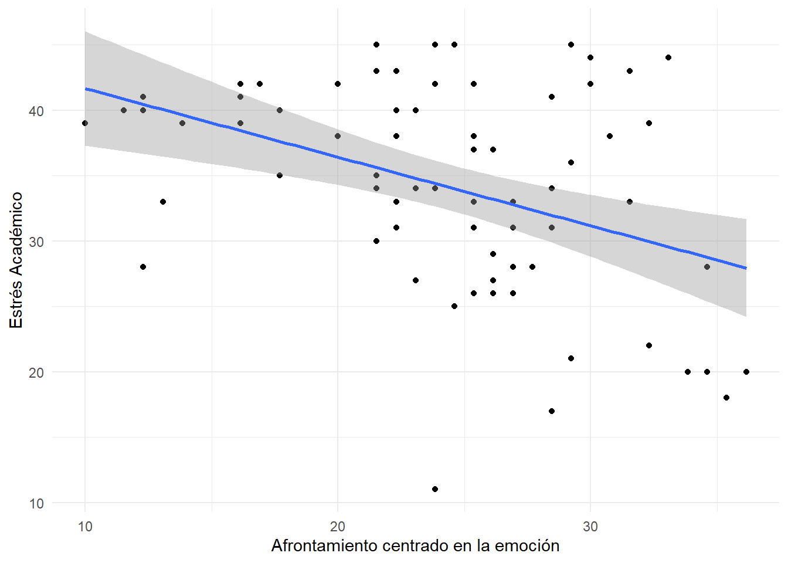

Análisis de Regresión Lineal Simple (RLS)
Objetivos
- Definir la regresión lineal y sus tipos
- Entender el concepto de variables independientes y dependientes
- Realizar un análisis de regresión lineal simple
Definición
Análisis en el que una variable \(Y\) (de salida, respuesta o dependiente) se encuentra en relación de dependencia respecto a una o más variables predictoras \(X_1, X_2, … X_p\) (explicativas o independientes). Es importante tener en cuenta que variaciones o cambios en la Y derivan de las variaciones en otras variables \(X_1, X_2,... X_p\)
Clasificación
Según la cantidad de variables:
Simple: Solo 1 variable predictora o independiente \(X\)
Múltiple: Más de una variable predictora \(X_1, X_2, … X_p\)
Según el tipo de relación:
Lineales
No lineales
No lineales en Y (logísticas)
Variables independientes y dependientes
Existen varias similitudes entre la correlación y la regresión lineal simple, en tanto ambas buscan establecer relaciones lineales entre dos variables. Sin embargo, hay importantes diferencias que se deben de tener en cuenta:
- A diferencia de la correlación, que solo establece una asociación entre dos variables, la regresión propone la noción de predicción. Esta es la diferencia mas importante, dado que los resultados de una variable \(X\) (independiente) se usan para predecir los resultados de una variable \(Y\) (dependiente).
- Así, la regresión establece una direccionalidad. En el lenguaje de la correlación, entendíamos como equivalente decir “a mas ansiedad hay mas depresión” o “a mas depresión hay mas ansiedad”. Sin embargo, en la regresión, dado que las variables se ordenan como independientes o dependiente, solo podemos establecer una sola vía de interpretación. Por ejemplo, si decimos que la ansiedad predice menores niveles de bienestar, NO es posible indicar que menores niveles de bienestar predicen mayor ansiedad.
Es común que al estudiar la relación entre dos variables, se piense en la noción de causa y efecto. La variable considerada causa, se le denomina “variable independiente” y la considerada efecto se denomina “variable dependiente”.
Sin embargo, en la investigación no experimental no es posible afirmar una relación causal, dado que el procedimiento de recojo de información no facilita una inferencia causal sobre las variables. Piensen en lo siguiente, si encuesto a las personas sobre ansiedad y bienestar a la vez, ¿puedo decir que la ansiedad va a impactar al bienestar?
Sin embargo, el análisis de la regresión lineal nos permite establecer relaciones de predicción, donde podemos evaluar si las variaciones en una variable independiente \(X\) predicen las variaciones que observaremos en una variable dependiente \(Y\)
Recta de la regresión
Un modelo de predicción, ecuación matemática que establece la relación de dependiente, puede visualizarse como una recta en un gráfico, en el que el eje horizontal (X) y el eje vertical representan los valores predichos de la variable dependiente (Y).
La recta a la que nos referimos se llama recta de regresión y lo hemos visto en los gráficos de dispersión de la clase de correlación.
Ecuación de la RLS
\[ Y = \alpha + \beta_1X_1 \pm \epsilon \]
En donde:
\(Y\) es la variable a predecir
\(X_1\) la variable predictora
\(\alpha\) (llamado también \(\beta_0\)) y \(\beta_1\) son parámetros desconocidos a estimar
\(\epsilon\) es el error que se comete en la predicción de los parámetros (error del modelo)
Actividad 1: ¿que significan los parámetros?
En la clase anterior, la recta del gráfico era estimada automáticamente para su visualización. Sin embargo, a fin identificar la función de cada uno de los parámetros de la regresión lineal simple vamos a ver un gráfico donde podrás cambiar libremente valores de \(\alpha\) y \(\beta_1\). Así, te pedimos que puedas contestar las siguientes preguntas:
- ¿Que sucede cuando modificamos el valor del \(\alpha\) sin mover el valor del \(\beta_1\)?
- ¿Qué sucede cuando modificamos el valor del \(\beta_1\) sin mover el valor del \(\alpha\)?
- ¿Crees que puedas llegar a situar la recta en la mitad de la nube de puntos para indicarnos una posible tendencia de la predicción?
#| standalone: true
#| viewerHeight: 600
library(shiny)
library(ggplot2)
library(tidyverse)
#library(latex2expr)
# Define UI for app that draws a histogram ----
ui <- fluidPage(
withMathJax(),
numericInput("intercept", "$\alpha$: ",
value = 5, min = 0, max = 25, step = 1),
numericInput("slope", "$\beta_1$:",
value = 0, min = -1, max = +1, step = .1),
plotOutput("parPlot")
)
server <- function(input, output, session) {
grf <- function(rr) {
x1 <- rnorm(100, 15, 5)
x2 <- scale(matrix(rnorm(100), ncol= 1))
x12 <- cbind(scale(x1),x2)
c1 <- var(x12)
chol1 <- solve(chol(c1))
newx <- x12 %*% chol1
zapsmall(cor(newx))
all.equal( x12[,1], newx[,1] )
newc <- matrix(
c(1, rr,
rr, 1), ncol = 2)
eigen(newc)
chol2 <- chol(newc)
finalx <- newx %*% chol2 * sd(x1) + mean(x1)
finalx |>
data.frame() |>
as_tibble() |>
set_names(c("x", "y"))
}
grf(.6) -> crrr
v <- reactiveValues(intercept = NULL, slope = NULL)
observeEvent(input$intercept, {
v$intercept <- input$intercept
})
observeEvent(input$slope, {
v$slope <- input$slope
})
output$parPlot <- renderPlot({
crrr |>
ggplot(aes(x = x, y = y)) +
geom_point() +
# geom_smooth(method = "lm", formula = "y ~ x") +
geom_abline(slope = v$slope, intercept = v$intercept, aes(colour = "blue")) +
theme_minimal() +
labs(title = NULL,
x = "Variable X", y = "Variable Y") +
scale_x_continuous(limits = c(5, 25),
breaks = seq(5, 25, by = 5)) +
scale_y_continuous(limits = c(5, 25),
breaks = seq(5, 25, by = 5))
})
}
# Create Shiny app ----
shinyApp(ui = ui, server = server)En efecto, como puedes ver los parámetros aluden a la pendiente de la linea (\(\beta_1\)) y su posición cuando cruza el eje Y (\(\alpha\)). Más aún, si bien podemos aproximarnos, hasta cierto punto, a colocar la línea en la mitad de la nube de puntos, no tenemos una precisión exacta de esta posición.
Por todo ello, necesitamos de un estimador que nos permita ubicar de manera correcta a la línea en medio de los puntos. En el caso de la regresión, esa estimación tiene el nombre de “mínimos cuadrados” (least squares). Si bien en el curso, no vamos a profundizar en este estimador, es importante que denotemos la necesidad de usar este tipo de funciones matemáticas para poder ubicar los parámetros idóneos de un modelo.
Contraste de hipótesis para la RLS
| Hipótesis | Notación | Interpretación |
|---|---|---|
| Nula | \(H_0: R^2 = 0\) | No hay relación predictiva |
| Bilateral | \(H_1: R^2 \neq 0\) | X predice Y |
| Unilateral derecho | \(H_1: R^2 > 0\) | X predice positivamente Y |
| Unilateral izquierdo | \(H_1: R^2 < 0\) | X predice negativamente Y |
Supuestos
Es importante que, antes de la regresión, podamos establecer si existe alguna evidencia de asociación lineal entre las variables. Para ello, hemos de analizar la correlación de Pearson o Spearman (según la normalidad de los datos) que corresponda a las hipótesis estadísticas del problema.
| Hipótesis de Correlación | Hipótesis de Regresión |
|---|---|
| \(H_0: r_{xy} = 0\) | \(H_0: R^2 = 0\) |
| \(H_0: r_{xy} \neq 0\) | \(H_1: R^2 \neq 0\) |
| \(H_1: r_{xy} > 0\) | \(H_1: R^2 > 0\) |
| \(H_1: r_{xy} < 0\) | \(H_1: R^2 < 0\) |
Bondad del Ajuste
- Coeficiente de determinación (\(R^2\)): permite evaluar la proporción de variabilidad de Y explicada por X. La magnitud de este coeficiente se puede interpretar a partir del criterio de Cohen (1988) de correlación elevado al cuadrado.
| Intevalo | Magnitud |
|---|---|
| 0 a .01 | Irrelevante |
| .01 a .09 | Pequeño |
| .09 a .25 | Mediano |
| .25 a 1 | Alto o grande |
Análisis de varianza: permite valorar hasta qué punto es adecuado el modelo de regresión lineal para estimar los valores de la variable (Y). El contraste de hipótesis es el siguiente:
\[ \displaylines{H_0 = R^2 = 0\\ H_1 = R^2 \neq 0} \]
Estimación de parámetros
Los parámetros de la regresión responden a los valores necesarios para completar la ecuación de la regresión. Es importante tener en cuenta que estos valores nos pueden permitir estimar un posible valor de Y cuando X cumple un determinado valor. Por ejemplo:
Imaginemos que tenemos que estimar la siguiente regresión donde la procrastinación (X) predice un menor nivel de rendimiento académico (Y).
\(Y = B_0 + B_1X_1 \pm \epsilon\)
Al realizar la regresión, podemos cambiar las incógnitas por sus respectivos valores:
\(Y = 2.14 + 1.4(X_1) \pm .8\)
Ahora imaginemos que tenemos un participante con 10 puntos en la escala de procastinación, ¿cuál sería su valor estimado de rendimiento académico?
- \(Y = 2.14 + 1.4(10) \pm .8 = [15.34, 16.94]\)
El rendimiento esperado se encontraría dentro del intervalo de confianza de 15.34 a 16.94.
Ejemplo 1
Un grupo de investigadores plantea que el afrontamiento centrado en el problema predice un menor estrés académico percibido por los estudiantes. Para evaluar su hipótesis tomaron una muestra de 72 jóvenes quienes respondieron a medidas de afrontamiento y estrés académico.
data <- haven::read_sav("https://github.com/renatoparedes/EstadisticaYPsicologiaMatematica/raw/main/INEE/Clase9_BaseRegresionLinealSimpleYMultiple.sav")
data# A tibble: 72 × 8
Código Sexo Relación HistVinc Afroproblema Afroemoción Estrés_académico
<chr> <dbl+lbl> <dbl+lb> <dbl> <dbl> <dbl> <dbl>
1 001 2 [Femeni… 1 [Si] 6 29.2 38 45
2 002 2 [Femeni… 0 [No] 7 23.8 45 45
3 003 2 [Femeni… 0 [No] 8 24.6 50 45
4 004 2 [Femeni… 0 [No] 5 21.5 45 45
5 005 2 [Femeni… 1 [Si] 8 30 49 44
6 006 2 [Femeni… 1 [Si] 6 33.1 48 44
7 007 1 [Mascul… 0 [No] 6 31.5 44 43
8 008 1 [Mascul… 1 [Si] 11 21.5 36 43
9 009 2 [Femeni… 0 [No] 8 22.3 35 43
10 010 2 [Femeni… 1 [Si] 8 23.8 32 42
# ℹ 62 more rows
# ℹ 1 more variable: ZRE_1 <dbl>- Indica las hipótesis de estudio, la ecuación del modelo de regresión lineal simple y el signo que debiera tener beta (\(\beta\)) si fuera cierta la \(H_1\).
- Evalúa si habría evidencia a favor de una posible relación entre las variables con un diagrama de dispersión.
- Evalúa la correlación entre las variables.
- Estima los parámetros del modelo de regresión.
- Evalúa la bondad del ajuste del modelo
- Realiza el contraste de hipótesis correspondiente y concluir en función a la hipótesis de estudio.
Paso 1. Planteamiento del ejercicio
HT: El afrontamiento centrado en el problema (X) predice un menor estrés académico (Y) percibido por los estudiantes.
Variable predictora (X) = Afrontamiento centrado en el problema (ACP)
Variable respuesta (Y) = Estrés Acádémico (E)
\(E = \alpha + \beta_{ACP}X_{ACP} \pm e, con\ \beta < 0\)
Hipótesis Estadísticas:
\[ \displaylines{H_0 : \beta_{ACP} = 0 \\ H_1 : \beta_{ACP} < 0\ (unilateral)} \]
Paso 2. Evidencias de posible relación
data %>%
ggplot(aes(x = Afroproblema, y = Estrés_académico)) +
geom_point() +
geom_smooth(method = lm) +
labs(x = "Afrontamiento centrado en la emoción",
y = "Estrés Académico") +
theme_minimal()`geom_smooth()` using formula = 'y ~ x'
Paso 3. Correlación entre variables
\(\displaylines{H_0: Hay\ normalidad \\ H_1: No\ hay\ normalidad}\)
data %>%
shapiro_test(Afroproblema, Estrés_académico)# A tibble: 2 × 3
variable statistic p
<chr> <dbl> <dbl>
1 Afroproblema 0.974 0.143
2 Estrés_académico 0.936 0.00119A partir de la prueba de Shapiro-Wilk, se observa que, si bien el afrontamiento centrado al problema muestra una distribución normal, \(SW = .974, p = .143\), el estrés académico no muestra una distribución normal de los datos, \(SW = .936, p = .001\). Por todo ello, se hará uso de un análisis no paramétrico.
\(\displaylines{H_0: r_{ACPE} = 0 \\ H_1: r_{ACPE} < 0\ (unilateral)}\)
data %>%
cor_test(Afroproblema, Estrés_académico, method = "spearman")# A tibble: 1 × 6
var1 var2 cor statistic p method
<chr> <chr> <dbl> <dbl> <dbl> <chr>
1 Afroproblema Estrés_académico -0.37 85007. 0.00153 Spearman\(p_{unilateral} = .00153/2 = .00077\)
A partir de la correlación de Spearman, se observa que existe una relación estadísticamente significativa, negativa y mediana entre el afrontamiento centrado en el problema y el estrés académico, \(r_{(70)} = -.37, p < .001\ (unilateral)\).
Paso 4. Estimar los parámetros de la regresión
lm(Estrés_académico ~ Afroproblema, data = data) -> m1
summary(m1)
Call:
lm(formula = Estrés_académico ~ Afroproblema, data = data)
Residuals:
Min 1Q Median 3Q Max
-23.3968 -4.9886 -0.5203 4.5205 14.4468
Coefficients:
Estimate Std. Error t value Pr(>|t|)
(Intercept) 46.9092 3.5161 13.34 < 2e-16 ***
Afroproblema -0.5247 0.1399 -3.75 0.00036 ***
---
Signif. codes: 0 '***' 0.001 '**' 0.01 '*' 0.05 '.' 0.1 ' ' 1
Residual standard error: 7.443 on 70 degrees of freedom
Multiple R-squared: 0.1673, Adjusted R-squared: 0.1554
F-statistic: 14.07 on 1 and 70 DF, p-value: 0.0003603La ecuación del modelo sería la siguiente:
\(E = 46.9092 - .5247X_{ACP} \pm 7.443\)
Paso 5. Bondad del ajuste
summary(m1)
Call:
lm(formula = Estrés_académico ~ Afroproblema, data = data)
Residuals:
Min 1Q Median 3Q Max
-23.3968 -4.9886 -0.5203 4.5205 14.4468
Coefficients:
Estimate Std. Error t value Pr(>|t|)
(Intercept) 46.9092 3.5161 13.34 < 2e-16 ***
Afroproblema -0.5247 0.1399 -3.75 0.00036 ***
---
Signif. codes: 0 '***' 0.001 '**' 0.01 '*' 0.05 '.' 0.1 ' ' 1
Residual standard error: 7.443 on 70 degrees of freedom
Multiple R-squared: 0.1673, Adjusted R-squared: 0.1554
F-statistic: 14.07 on 1 and 70 DF, p-value: 0.0003603Coeficiente de determinación: El coeficiente de determinación es mediano y explica el 16.73% de la variabilidad del estrés académico, \(R^2 = .17\).
Análisis de varianza:
\(\displaylines{H_0: R^2 = 0 \\ H_1:R^2 \neq 0}\)
El modelo es adecuado para ser interpretado, \(F(70) = 14.07, p < .001\).
Paso 6. Contraste de Hipótesis
summary(m1)
Call:
lm(formula = Estrés_académico ~ Afroproblema, data = data)
Residuals:
Min 1Q Median 3Q Max
-23.3968 -4.9886 -0.5203 4.5205 14.4468
Coefficients:
Estimate Std. Error t value Pr(>|t|)
(Intercept) 46.9092 3.5161 13.34 < 2e-16 ***
Afroproblema -0.5247 0.1399 -3.75 0.00036 ***
---
Signif. codes: 0 '***' 0.001 '**' 0.01 '*' 0.05 '.' 0.1 ' ' 1
Residual standard error: 7.443 on 70 degrees of freedom
Multiple R-squared: 0.1673, Adjusted R-squared: 0.1554
F-statistic: 14.07 on 1 and 70 DF, p-value: 0.0003603Los elementos que tenemos que evaluar en el contraste son los siguientes:
| Criterio | Resultado |
|---|---|
| Significatividad (Contraste de hipótesis) | Dado que \(p_{unilateral} = .00036/2 = .00018\) se rechaza \(H_0\). |
| Sentido | El coeficiente Beta no estandarizado es -.53, por lo que el sentido es negativo |
| Grados de Libertad | \(N-k-1\), donde \(N\) es la cantidad total de participantes y \(k\) la cantidad de variables independientes (predictoras) en el modelo. De esta forma, tenemos \(72-1-1=70\) grado de libertad. |
A partir del análisis de regresión, se observa que el afrontamiento centrado en el problema es un predictor estadísticamente significativo y negativo del estrés académico, \(\beta_{ACP} = -.53, t_{(70)} = -3.75, p_{unilateral} < .001\).
Paso 7. Conclusión final
A partir del análisis de regresión lineal simple, con el afrontamiento centrado en el problema como predictor del estrés académico, se encontró que existe un modelo adecuado con un coeficiente de determinación mediano que explica el 16.73% de la variabilidad del estrés, \(F(70) = 14.07, p < .001, R^2 = .17\). Específicamente, se encontró que el afrontamiento centrado en el problema es un predictor estadísticamente significativo y negativo del estrés académico, \(\beta_{ACP} = -.53, t_{(70)} = -3.75, p_{unilateral} < .001\). Por todo ello, se puede concluir que se cumple con la hipótesis del equipo de investigación.